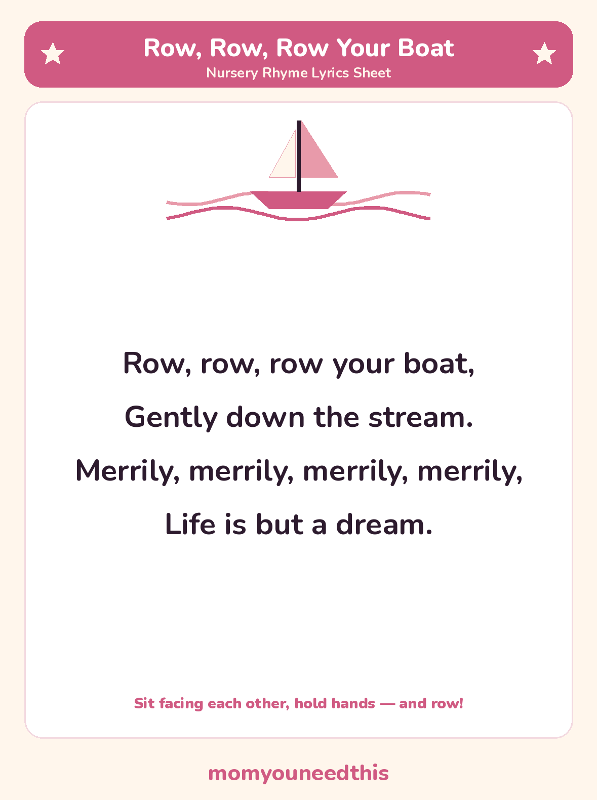

Row, Row, Row Your Boat Sing it as a round — lyrics and a free printable
Row Row Row Your Boat is the nursery rhyme that becomes a boat ride: sit facing each other, hold hands, and rock back and forth like rowing while you sing. The full lyrics are below, with a free printable lyrics sheet and the simple way to sing it as a round.
Last updated: October 25, 2026
Quick Answer
The Row Row Row Your Boat lyrics are one short verse: “Row, row, row your boat, gently down the stream. Merrily, merrily, merrily, merrily, life is but a dream.” This nursery rhyme page prints the verse in full — on the page and on a free printable lyrics sheet — with how to sing it as a round.
At a Glance
- Rhyme: Row, Row, Row Your Boat
- Type: Action rhyme — sung as a round
- Best for: Ages 2–6
- Printable: 1 lyrics sheet
- Tradition: In print since 1852
- Cost: Free — print at home
🎵 Row, Row, Row Your Boat Lyrics
Four lines are the whole rhyme — which is exactly why it works so well as a round and as a rowing game. Learn this one verse and you know the song in full.
Row, row, row your boat,
Gently down the stream.
Merrily, merrily, merrily, merrily,
Life is but a dream.

✂️ Download Your Free Row, Row, Row Your Boat Lyrics Sheet
The full lyrics on one sheet — big, clear lines for young readers.
⬇️ Download Free Lyrics Sheet 🖨️ Print🎁 Free printable for ages 2–6
🚣 Sing It Together — Row, Then Round
Start as a rowing game: sit on the floor facing your child, hold hands, and rock gently back and forth in time with the song, as if you are rowing the boat together. Toddlers who cannot manage the words yet can still row — and rocking in rhythm is the whole game at that age.
When the verse is solid, try it as a round: one singer starts, and the next singer starts from the beginning just as the first reaches “gently down the stream.” The two voices chase each other down the stream. It falls apart into giggles the first few times — that is part of the tradition too.
🖨️ How to Use This Rhyme
- Row first, sing second. Sit facing your child, hold hands and rock while you sing — the movement carries the song.
- Slow the stream down. Sing it very slowly, then faster, and let your child choose the speed of the boat.
- Print the lyrics sheet. Four short lines in big print — a first song sheet a young child can genuinely follow.
- Try the round. Once your child knows the verse, start the round: you begin, and they start one line behind you.
🎵 More Nursery Rhymes & Fun
🎵 Nursery Rhymes
The full hub of classic nursery rhymes — lyrics and a free printable sheet for every rhyme. Browse all nursery rhymes.
🌸 Ring Around the Rosie
The singing game rhyme — hold hands, walk in a circle, and all fall down. Play Ring Around the Rosie.
🌙 Hey Diddle Diddle
The classic nonsense rhyme — the cat, the fiddle and the cow over the moon. Read Hey Diddle Diddle.
📚 Learning Activities
The full hub of free printable activities for toddlers and preschoolers. Browse activities.
❓ Row, Row, Row Your Boat FAQ
What are the lyrics to Row Row Row Your Boat?
They are in full on this page: “Row, row, row your boat, gently down the stream. Merrily, merrily, merrily, merrily, life is but a dream.” That one verse is the whole song, and the same words are on the free printable lyrics sheet.
What age is Row Row Row Your Boat for?
It suits ages 2 to 6. A 2-year-old can do the rowing rock and join in on “merrily, merrily”; older preschoolers can hold the whole verse and try singing it as a round.
Can I print the lyrics sheet?
Yes — the lyrics sheet is free to print at home, with no signup. Print it as many times as you like for your own family or classroom.
How do you sing Row Row Row Your Boat as a round?
Sing the verse in a loop. One singer starts, and the next singer starts from the beginning just as the first singer reaches “gently down the stream.” Everyone keeps looping the same verse — when it works, the voices sound like boats passing each other.